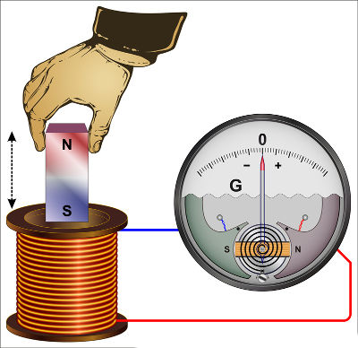

A história da eletricidade passa por grandes mentes que vão desde a área da química, na qual foram desenvolvidas as noções da estrutura do átomo e como a movimentação dos elétrons libera energia quando mudam de camada de valência. Essas ideias foram essenciais para que posteriormente engenheiros e cientistas pudessem pesquisar o comportamento da eletricidade em um circuito. Alguns nomes ficaram conhecidos por suas contribuições para entender funcionamento da eletricidade, tais como Ohm, Faraday, Henry, entre outros.
Georg Simon Ohm (1787 - 1854) nasceu na Bavária, Alemanha. Trabalhava como professor secundário de Matemática no Colégio dos Jesuítas, em Colônia, mas desejava lecionar na universidade. Para tanto, foi-lhe exigido, como prova de admissão, que realizasse um trabalho de pesquisa inédito. Optou por fazer experiências com a eletricidade, e para isso construiu seu próprio equipamento, incluindo os fios.Experimentando diferentes espessuras e comprimentos de fios, acabou descobrindo relações matemáticas extremamente simples envolvendo essas dimensões e as grandezas elétricas. Inicialmente, verificou que a intensidade da corrente era diretamente proporcional à área da seção do fio e inversamente proporcional a seu comprimento. Com isso, Ohm pôde definir um novo conceito: o de resistência elétrica.
O que significa resistência elétrica? Os elétrons livres que fluem ao longo do fio ou cabo elétrico têm de passar por entre os átomos que o compõe, chocando-se constantemente com eles. Desse modo, o fluxo de elétrons é brecado pela resistência que os átomos opõem à sua passagem.
Em 1827, Ohm conseguiu formular um enunciado que envolvia, além dessas grandezas, a diferença de potencial: "A intensidade da corrente elétrica que percorre um condutor é diretamente proporcional à diferença de potencial e inversamente proporcional à resistência do circuito". Tal enunciado é até hoje conhecido como Lei de Ohm. Tais relações haviam também sido apontadas, meio século antes, pelo inglês Cavendish, que, no entanto, não as divulgou.
Embora estes estudos tenham sido uma colaboração importante na teoria dos circuitos elétricos e suas aplicações, o cargo universitário almejado por Ohm lhe foi negado. Suas conclusões receberam críticas negativas, em parte porque ele tentou explicar esses fenômenos com base numa teoria sobre o fluxo de calor. Ohm precisou até mesmo se demitir do seu emprego de professor secundário em Colônia, e viveu na pobreza durante os seis anos seguintes. Em 1833, entretanto, ele se reintegrou nas atividades cientificas aceitando um cargo na Escola Politécnica de Nuremberg.
Como ocorreu (e ocorre) com tantos outros pesquisadores, seu trabalho começou a ser reconhecido primeiramente no exterior. Em 1841, ele receberia uma medalha da Royal Society, de Londres. Só em 1849, Ohm conseguiria tornar-se professor da Universidade de Munique, cargo no qual permaneceria por apenas cinco anos, os últimos de sua vida.
Indução de Faraday
Michael Faraday (1791-1867) foi um dos cientistas mais influentes da Física e da Química e também um dos maiores experimentalistas da história. Trouxe grandes contribuições para a área do Eletromagnetismo, como a descoberta da indução eletromagnética – sua maior descoberta. Para tanto, Faraday conseguiu produzir uma corrente elétrica em um fio desconectado de fontes de energia, tais como baterias e pilhas, utilizando apenas o movimento relativo de um ímã. Veja a seguir a ilustração do fenômeno de indução eletromagnética, descoberto por Faraday. Quando o ímã se move em relação à bobina, um galvanômetro indica a passagem de corrente elétrica:

Nascido na Inglaterra, Faraday recebeu pouca educação formal. Aos 14 anos, começou a trabalhar com encadernação de livros e, durante um período de sete anos, pôde ler vários exemplares. Interessou-se principalmente em artigos sobre eletricidade.
Dentre as descobertas e contribuições de Faraday, podemos destacar:
-Criou a noção de campo elétrico e magnético;
-Estabeleceu uma relação entre campo elétrico e magnético;
-Descobriu o fenômeno de indução eletromagnética, responsável pelo funcionamento dos motores elétricos e transformadores;
-Suas descobertas possibilitaram o desenvolvimento das equações do eletromagnetismo por James Clerk Maxwell.